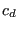

Next: *FREQUENCY Up: Input deck format Previous: *FLUID CONSTANTS Contents
Keyword type: model definition
This option is used to assign material properties to network element sets. The parameters ELSET and MATERIAL are required, the parameters TYPE, OIL and CONSTANTS are optional. The parameter ELSET defines the network element set to which the material specified by the parameter MATERIAL applies.
The parameter TYPE is only necessary in fluid dynamic networks in which the pressure and/or the mass flow are unknown in at least one node. In that case, the type of fluid section must be selected from the list in section 6.2.37 and the appropriate constants describing the section must be specified in the line(s) underneath the *FLUID SECTION keyword card, eight per line, except for the last line which can contain less.
The parameter OIL defines the material parameters used in two-phase flow in gas pipes, restrictors and branches. Its argument must be the name of a material defined using the *MATERIAL card.
Finally, with the parameter CONSTANTS the number of parameters needed to describe the type of fluid section can be specified. This parameter is only necessary for user-defined fluid section types. They start with “U” and can only be defined for compressible network elements. For further information the reader is referred to Section 6.4.25.
First line:
Following line (only necessary if TYPE was used):
Example: *FLUID SECTION,MATERIAL=NITROGEN,ELSET=Eall
assigns material NITROGEN to all elements in (element) set Eall.
Example: *FLUID SECTION,MATERIAL=AIR,ELSET=Eall,TYPE=ORIFICE_PK_MS 3.14,0.1,2.,0.01,0.1
assigns material AIR to all elements in set Eall. The type of fluid section is an orifice with the  coefficient calculated following the formulas by Parker and Kercher [65], modified for the influence of the rotational velocity by McGreehan and Schotsch [49]. The area of the orifice is 3.14, the length is 0.1, the diameter is 2., the inlet corner radius is 0.01 and the pipe diameter ratio is 0.1.
Example files: furnace, beamhtfc, branch1.